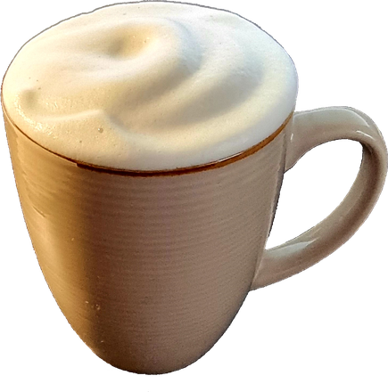

!eichelhäherEurasian jay
Twitch & YouTube
Hier findest Du alle verfügbaren Commands für den Vogelstream. Gib einen Befehl einfach in den Chat ein. Alle aufgeführten Commands funktionieren grundsätzlich auf Twitch und YouTube.

Sichtungen
!eichelhäherEurasian jay
!amselBlackbird
!hausrotschwanzBlack redstart
!türkentaubeCollared pigeon
!ringeltaubeWood pigeon
!straßentaubeFeral pigeon
!hohltaubeStock dove
!spatzHouse sparrow
!blaumeiseBlue tit
!kohlmeiseGreat tit
!kleiberEurasian nuthatch
!buntspechtGreat spotted woodpecker
!grünspechtGreen woodpecker
!rotkehlchenEuropean robin
!elsterMagpie
!rabenkräheCarrion crow
!kolkrabeRaven
!starEuropean starling
!kernbeißerHawfinch
!sperberSparrow hawk
!statsÜbersicht der Vogel-Sichtungen des aktuellen Tages.
Sichtungen
!gangSehr viele Spatzen.
!eichiEichhörnchen-Sichtung.
!katzeKatze!!!!!
!fliege„Wenn Fliegen hinter Fliegen fl…“
!bieneDa ist eine Biene!
!hummelHummel-Sichtung.
!wespeNa super…
!schmetterlingToll!
!nvDer Nachfüllvogel füllt nach.
Chat-Service
!tts {Text}Lässt Deinen eingegebenen Text sprechen.
!palimpalimBegrüßung mit Pommes.
!moin / !moinmoinNorddeutsche Begrüßung.
!bierKühles Bier ab 4.
!rundebierFlüssigbrot für den Chat!
!chipsEine Tüte Kartoffelchips.
!croissantLeckeres Gebäck.
!currywurstCurrywurst mit Beilage.
!dönerDöner mit alles.
!eisbecherEin Becher mit leckerer Eiscreme.
!fassbrauseFassbrause vom Fass.
!glühweinWärmt die Seele.
!kaffeeEine Tasse Kaffee.
!limoFrisch aus dem Kühlschrank.
!mateEin Mate-Tee, lecker!
!ostfriesenteeOstfriesentee mit Sahne.
!rundelimoGetränke nach Wahl für alle.
!lutscherDauerlutscher.
!pommesEine Flasche Pommes!
!schokiEine Tasse heiße Schokolade.
!schwarzwälderkirschEin Stück Torte.
!teeEine Tasse Tee.
Allgemein
!clipIch habe einen Clip erstellt!
!chuckDas Reh namens Chuck Norris.
!chucklobenDarf auch mal sein.
!cnChuck-Norris-Witze.
!dobbyWas macht der da?
!dobbylobenLob tut immer gut.
!ggGut gemacht!
!quoteZufalls-Zitate.
!uffWenn etwas schiefging.
Punkte & Interaktion
!wasserSpendet den Vögeln etwas Wasser. Kostet 250 Federn.
Neu!federnZeigt Deine bereits gesammelten Federn an.
Neu!imbissbude 5Eine virtuelle Reise mit Deinen Pommes. Mit etwas Glück gewinnst Du weitere Punkte.
Klassiker!8ball {Frage}Stelle dem Orakel eine Ja/Nein-Frage – bitte nicht ernst nehmen.
Klassiker!pointsZeigt Deine bisher gesammelten Pommes an.
Klassiker!duellFordere einen Zuschauer zum Punkte-Duell heraus. Antwort: !annehmen oder !ablehnen; Abbruch mit !cancel.
Lizenzfreie Kanalsongs
Du möchtest einen per KI erzeugten Song hören? Hier gibt es eine kleine Auswahl mit Musiktiteln passend zum Kanal.
!songtruhe„Truhe voller Eindruck“
!songvg„Vogel-Gourmet“
!songfw„Futter-Weisheiten“
!songspst„Spatzen-Stammtisch“
!songphantom„Das Phantom der Futterschale“
!songkohligang„Kohli & die Gang“
!songstreife„Chuck & Dobby auf Streife“
!songveteran„Der Veteran vom Futterhaus“ (Humpi)
!songfeivel„Alle Wege führen zum Futterhaus“ (Feivel)
Keine passenden Commands gefunden.